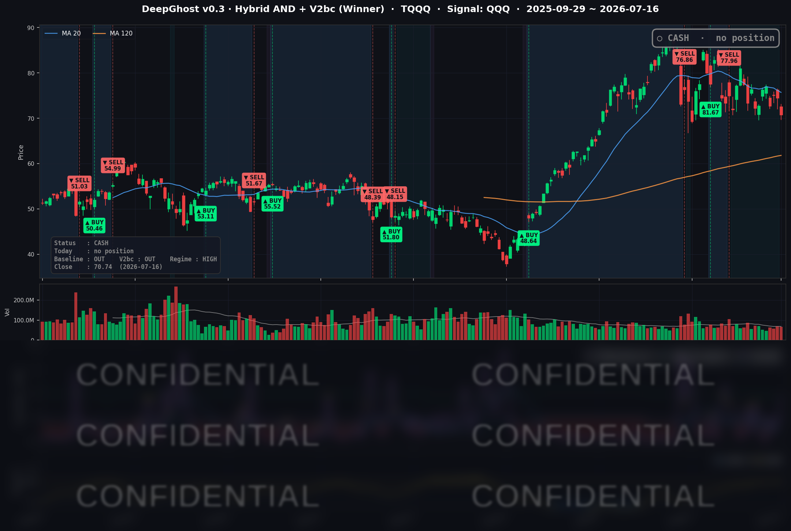

👻 매일 시그널과 히스토리를 홈페이지에서 한눈에 → www.ghostai.co.kr
어제는 반도체만 홀로 밀렸는데, 오늘은 'AI 투자 과열' 공포가 나스닥 전체를 흔들었습니다. 3주전 우리의 현금화 전략이 맞았습니다.
앞으로 V자 반등으로 갈지, 추세적 하락으로 갈지, 한발 떨어져 지켜봅시다. 저희는 맘편한 투자를 추구합니다.
📊 오늘의 매매 신호
| 항목 | 내용 |
|---|---|
| 오늘 할 일 | ✅ 아무것도 안 해도 됩니다 |
| 포지션 상태 | 💵 현금 보유 중 (OUT OF POSITION) |
| 현금 보유 기간 | 2026-06-25 ~ 2026-07-16 (21일) |
| TQQQ 종가 | $70.74 (-4.97%) |
지난 6/25 매도 이후 전략은 계속 현금 상태를 유지하고 있습니다. 이날은 나스닥이 전반적으로 밀리며 TQQQ가 하루 -4.97% 급락했지만, 전략은 현금 보유 상태였던 덕에 이 하락을 그대로 피했습니다.
TQQQ 시그널 — OUT OF POSITION
현재 상태: 현금 보유 중 | 6/25 매도 이후 관망 지속

어제(7/15)는 반도체가 무너지면서 QQQ만 홀로 밀렸던 국지적 조정이었습니다. 오늘(7/16)은 그 반도체 균열이 나스닥 전반으로 번졌습니다. 우리 전략의 시장 국면 필터는 며칠째 "지금은 변동성이 큰 위험 구간"이라고 판정해 신규 매수를 걸러내고 있었고, 그 덕에 오늘 -4.97% 하방을 통째로 회피했습니다. 어제가 "예방적 방어"였다면, 오늘은 실제 급락일에 값어치를 보여준 방어였습니다.
오늘 미국 시장 — 시황 요약
견조한 경제 지표에도 불구하고 반도체가 이틀 연속 무너지며 지수를 끌어내린 기술주 약세일이었습니다. 발단은 TSMC였습니다. 실적 자체는 좋았는데, 2026년 설비투자(capex) 계획을 기존 $52~56B에서 $60~64B로 크게 늘리겠다고 발표한 것이 오히려 "AI에 너무 많이 쏟아붓는 것 아니냐(과열/천장)"는 공포로 번졌습니다. 여기에 메모리 체인(마이크론·SK하이닉스)이 중국 경쟁 이슈로 무너졌고, 알파벳은 차세대 AI 모델(제미나이 3.5 프로) 출시 지연 보도에 -4.4% 급락했습니다. 다만 하락은 여전히 반도체·AI 관련주에 집중됐고, 다우와 러셀은 거의 보합이었습니다.
지수 마감
| 지수 | 종가 | 등락률 |
|---|---|---|
| S&P 500 | 7,533.77 | -0.51% |
| 나스닥 종합 | 25,881.95 | -1.47% |
| 다우존스 | 52,552.97 | -0.20% |
| 러셀 2000 | 2,974.57 | -0.06% |
낙폭이 시가총액 상단(나스닥·QQQ)에 집중된 전형적인 "쏠림 하락"이었습니다. QQQ는 -1.64%, TQQQ는 -4.97% 밀렸지만, 다우(-0.20%)와 러셀(-0.06%)은 거의 제자리였습니다. QQQ와 다우의 이 큰 괴리가 오늘 시장의 성격을 요약합니다. 시장 전체가 무너진 게 아니라, AI 설비투자에 민감한 종목만 쏠려 빠진 날이었습니다.
국채 금리 동향
| 만기 | 수익률 | 전일 대비 |
|---|---|---|
| 3개월 (^IRX) | 3.697% | +0.9bp |
| 5년 (^FVX) | 4.282% | +2.7bp |
| 10년 (^TNX) | 4.569% | +2.4bp |
| 30년 (^TYX) | 5.098% | +1.5bp |
어제와 정반대로, 오늘은 금리가 전 구간에서 올랐습니다. 견조한 소매판매·고용·제조업 지표가 "연준이 서두를 이유가 없다(고금리 장기화)"는 서사를 강화하며 금리를 밀어올린 것입니다. 특히 중기물인 5년물(+2.7bp)이 단기물보다 더 크게 오른 점이 눈에 띕니다. 10년물에서 3개월물을 뺀 장단기 스프레드는 +87.2bp로 곡선은 정상(우상향)을 유지했고 역전은 없습니다. 다만 30년물이 5.1%, 10년물이 4.57%까지 오른 높은 금리 자체가 밸류에이션이 높은 반도체·성장주에는 추가 부담으로 작용했습니다.
연준 발언 & 금리 패스
케빈 워시 연준 의장은 최근(신트라 ECB 포럼)에서 "물가가 여전히 너무 높다"며 2%를 웃도는 인플레이션에 안주할 뜻이 없음을 재확인했습니다. 매파적인 어조입니다. 7월 8일 공개된 6월 FOMC 의사록에서는 위원 절반이 동결·인하를, 나머지 절반이 연내 인상을 지지하는 이례적 분열이 드러났고, 시장이 반영하는 연내 인상 확률도 최근 18%에서 36%로 상승했습니다. 이날의 견조한 경제 지표는 "연준이 완화를 서두를 이유가 없다"는 서사를 뒷받침해, 7월 회의 동결(소수의 인상론 병존)이 여전히 기본 시나리오입니다.
오늘의 핵심 이슈
- TSMC — 호실적에도 설비투자 상향이 'AI 투자 천장' 공포를 촉발. 실적은 예상을 넘겼지만, 2026년 연간 자본지출 가이던스를 $52~56B에서 $60~64B로 올린 것이 오히려 "AI 인프라 과잉투자·수익성 압박" 신호로 해석됐습니다. TSMC 뉴욕 상장분이 -3.5~4.6% 빠지며 반도체 섹터 전반을 끌어내렸습니다.
- 메모리·반도체 2일 연속 붕괴. 마이크론(MU) -5.65%, 인텔(INTC) -5.84%, 브로드컴(AVGO) -5.03%, 퀄컴(QCOM) -4.14%. 중국 메모리 업체(CXMT)의 대규모 상장 소식과 미국의 고대역폭 메모리(HBM) 수출 규제 검토 보도가 겹치며, 미국 상장 SK하이닉스가 급락(-9%대)해 심리 악화를 키웠습니다.
- 알파벳(GOOGL) -4.44% — 차세대 AI 모델 출시 지연 보도. 알파벳의 최상위 AI 모델(제미나이 3.5 프로) 출시가 일정보다 늦어지고 있다는 보도가 나왔습니다. 경쟁사들이 신모델을 내놓는 상황에서 AI 주도권 우려가 부각되며 지수 하락에 크게 기여했습니다.
변동성 & 투자심리
VIX는 전일 15.67에서 16.73으로 +6.76% 반등했습니다. 반도체 급락에 변동성이 튀었지만, 절대 수준은 여전히 20을 밑도는 중립대입니다. 패닉이라기보다 섹터 국지적 조정에 가까운 신호입니다. CNN 공포탐욕 지수도 반도체·AI 밸류에이션 경계가 커지며 낙관에서 중립~경계 구간으로 후퇴하는 흐름을 보였습니다. 매크로 지표는 견조했지만 하락이 반도체에 집중돼, 전반적인 분위기는 "중립~약간 비관"이었습니다.
매크로 & 원자재
- WTI $79.60, 브렌트 $84.95 (7/15 확정치)
- 금 $4,044.00 (7/15 확정치)
이날(7/16) 원자재 데이터는 일시적 공백이 있어 직전 확정치인 7/15 종가를 참고로 표기합니다. 미국-이란 지정학 긴장이 유가를 떠받쳤고, 유가 강세는 인플레이션·연준 경계 서사와 맞물려 위험자산에 부담으로 작용했습니다.
주요 종목 동향
| 종목 | 전일 종가 | 당일 종가 | 등락률 | 비고 |
|---|---|---|---|---|
| AAPL | 327.50 | 333.26 | +1.76% | 방어적 자금 이동 수혜, 지수 하락일 단독 강세 |
| MSFT | 395.63 | 401.10 | +1.38% | 애플과 함께 방어주 흐름 |
| NFLX | 73.68 | 74.35 | +0.91% | 소폭 강세(스트리밍, 반도체 무관) |
| TSLA | 394.46 | 391.06 | -0.86% | 상대적 선방 |
| AMZN | 254.96 | 249.89 | -1.99% | 대형 인터넷 동반 약세 |
| NVDA | 212.50 | 207.40 | -2.40% | 반도체 약세 동조, AI 밸류에이션 재평가 |
| META | 681.31 | 664.54 | -2.46% | 대형 인터넷 약세 |
| QCOM | 177.98 | 170.61 | -4.14% | 반도체 급락 |
| GOOGL | 370.92 | 354.46 | -4.44% | 차세대 AI 모델 지연 보도, 주도권 우려 |
| AVGO | 394.28 | 374.45 | -5.03% | AI 하드웨어·반도체 급락 |
| MU | 904.28 | 853.20 | -5.65% | 메모리 붕괴(중국 경쟁·수출규제 우려) |
| INTC | 102.99 | 96.98 | -5.84% | 낙폭 최대, $100 하회 |
같은 급락일이었지만 종목 안에서는 결이 뚜렷이 갈렸습니다. 반도체·AI 관련주(인텔·마이크론·브로드컴·알파벳)가 -4~6% 무너진 반면, 애플(+1.76%)·마이크로소프트(+1.38%)는 오히려 상승했습니다. 반도체에서 빠져나온 자금이 실적이 안정적이고 AI 설비투자 노출이 상대적으로 낮은 대형주로 옮겨간 "방어적 자금 이동"의 결과입니다. 지수가 빠져도 그 안에서는 돈이 이동한다는 시장의 결을 보여준 하루였습니다.
Ghost.AI — Quantitative AI Investment
Model: DeepGhost v0.3 | Transformer-Based Deep Learning
Coverage: 13 tickers | Updated every trading day after US market close
⚠️ 본 자료는 정보 제공 목적으로만 작성되었으며 투자 권유가 아닙니다. 모든 투자의 책임은 투자자 본인에게 있습니다. 과거 성과가 미래 수익을 보장하지 않습니다.
[유의사항]
- 본 서비스는 불특정 다수를 대상으로 발행되는 단방향 정보 제공 서비스이며, 투자자 개인의 재산 상황·투자 목적·위험 선호도를 반영한 개별 투자 조언이 아닙니다.
- 고스트에이아이 주식회사는 고객과 쌍방향 의사소통(개별 상담, 맞춤형 자문 등)을 제공하지 않습니다.
- 본 콘텐츠는 투자 권유 또는 매매 주문의 청약·청약의 권유에 해당하지 않으며, 최종 투자 판단 및 그에 따른 손익의 책임은 전적으로 투자자 본인에게 있습니다.
고스트에이아이 주식회사